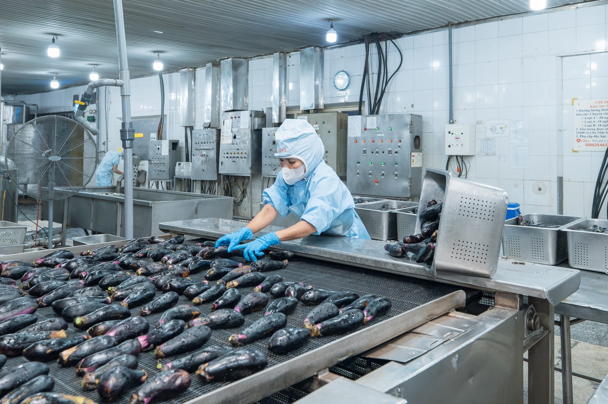

BLF phát huy lợi thế thiên nhiên trù phú của các vùng nguyên liệu, tiêu biểu là tỉnh Bạc Liêu, để tuyển chọn và thu mua rau củ, trái cây, trà, hải sản. Trên nền tảng quan hệ tin cậy với nhà sản xuất địa phương, chúng tôi tổ chức sản xuất theo kế hoạch và quản lý tồn kho, nhờ đó hạn chế sai lệch chất lượng và đảm bảo cung ứng ổn định. Hệ thống truy xuất nguồn gốc từ thu mua đến xuất hàng giúp khách hàng yên tâm sử dụng nguyên liệu của chúng tôi.
